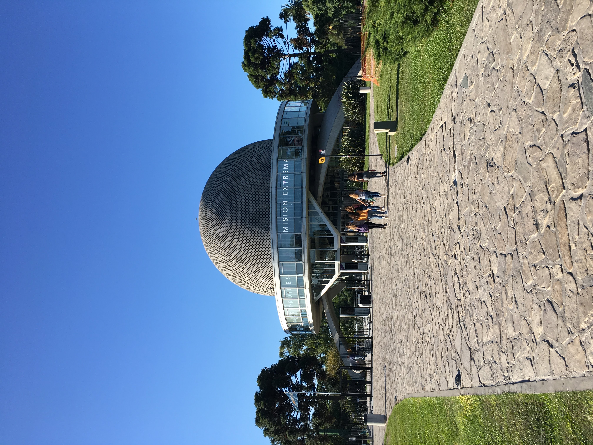
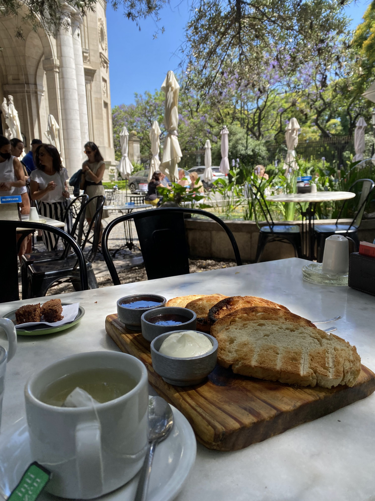
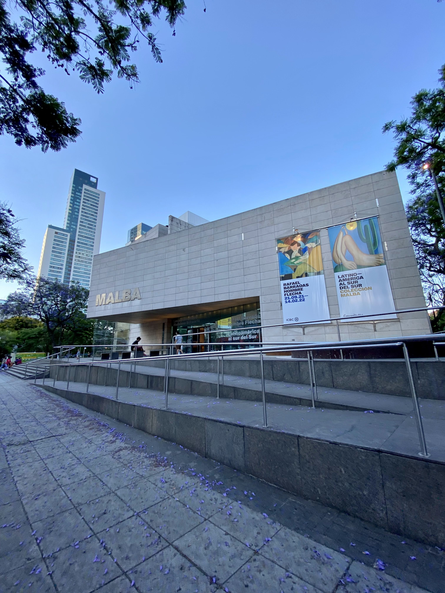
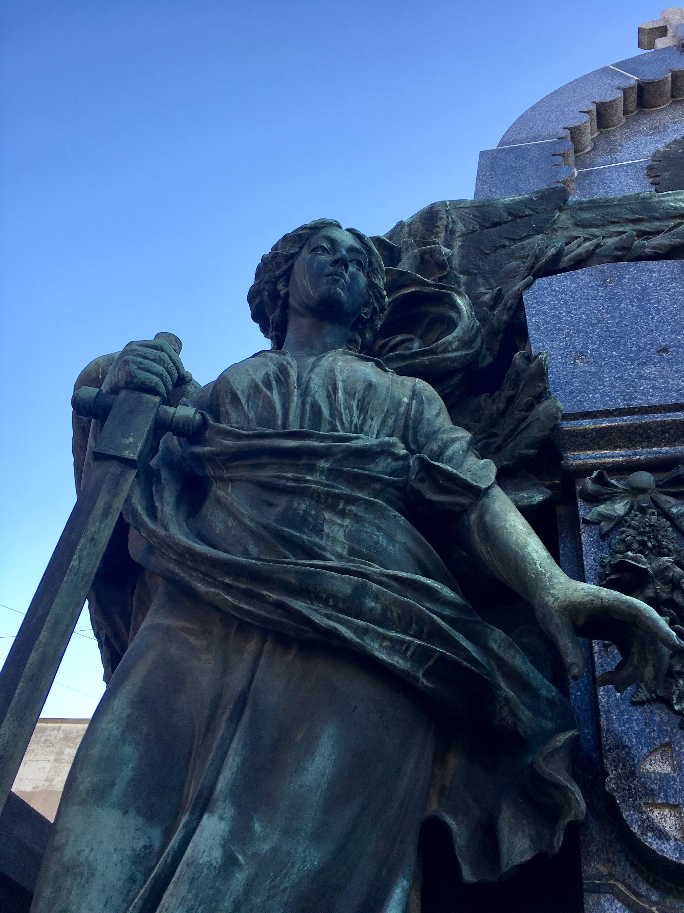
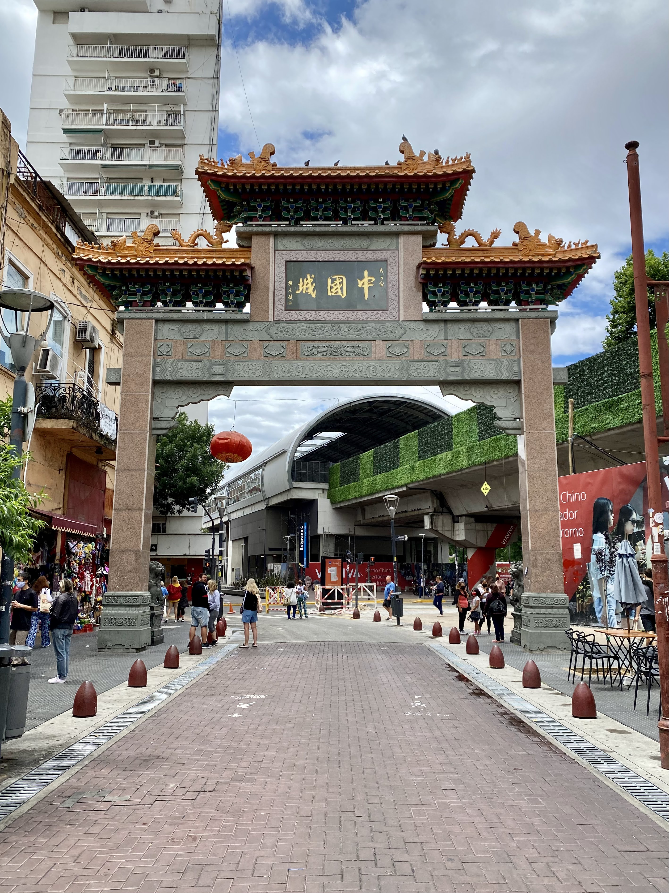
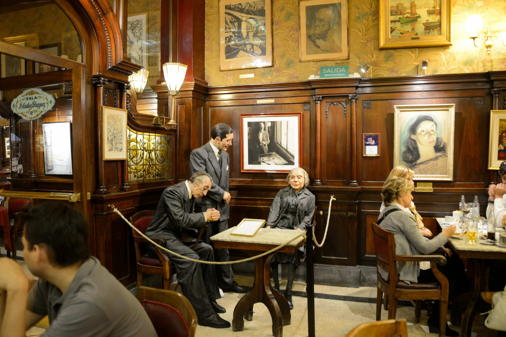

¿Qué hacer enBuenos Aires?
Esta es una lista de "10 cosas" que recomendamos hacer en la Ciudad de Buenos Aires, no te vas a arrepentir.
#1 Planetario Galileo Galilei
En el Planetario Galileo Galilei de Buenos Aires puedes observar el cielo nocturno, disfrutar de espectáculos en 3D y en formato fulldome, aprender sobre astronomía en su museo interactivo, participar en talleres y eventos para todas las edades, y visitar la terraza para disfrutar de una vista panorámica de la ciudad y observar el cielo nocturno con telescopios.
¿Cómo llegar?
El Planetario Galileo Galilei está ubicado en el barrio de Palermo, en la calle Av. Sarmiento 3195, en la Ciudad de Buenos Aires, Argentina. Para llegar en transporte público, puedes tomar el subte (línea D) hasta la estación "Palermo" y caminar aproximadamente 10 minutos por la calle Av. Figueroa Alcorta hasta llegar al Planetario. También hay varias líneas de colectivo (autobús) que pasan por la zona, como las líneas 10, 37, 41, 59, 60, 67, 93, 95, 102, 108, 118, 128, 141, 160, 161, 166, 188 y 194. Si prefieres ir en auto, el Planetario cuenta con un estacionamiento gratuito y seguro para los visitantes.
#2 Croque Madame - Palacio Paz
Desayuna o almuerza en el bellísimo Palacio Paz.
¿Cómo llegar?
El Café Croque Madame se encuentra en el Palacio Paz, ubicado en Av. Santa Fe 740. Puedes tomar la línea D (verde) o la línea H (amarilla) del subte, bajándote en las estaciones Callao o Las Heras, respectivamente, que se encuentran a unos 10 minutos caminando del café. También puedes tomar algunas líneas de colectivos (autobuses), como la 12, 29, 39, 60, 64, 68, 75, 95, 99, 106, 109, 111, 124, 132, 140 y 152, que circulan por la zona. Te recomendamos utilizar alguna aplicación o sitio web de transporte público para obtener información actualizada sobre las rutas, horarios y paradas de transporte público cercanas al Palacio Paz.
#3 San Telmo
San Telmo es uno de los barrios más pintorescos y bohemios de Buenos Aires, y definitivamente uno de los lugares que no te puedes perder durante tu visita a la ciudad. Con sus calles adoquinadas, sus antiguos edificios coloniales y su ambiente bohemio, San Telmo es el hogar de algunos de los mejores mercados de antigüedades y de las mejores milongas (bailes de tango) de la ciudad. Podrás disfrutar de espectáculos callejeros, artistas en vivo, bares y restaurantes tradicionales, y pasear por sus plazas y rincones llenos de historia y cultura. No dejes de visitar la famosa Plaza Dorrego, donde podrás disfrutar de música en vivo, artesanías y antigüedades, y descubrir el lado más auténtico de Buenos Aires. San Telmo es un barrio lleno de vida y color, que te dejará una impresión duradera de la cultura y el encanto porteño.
¿Cómo llegar?
Para llegar a San Telmo desde el centro de Buenos Aires, puedes tomar el subte (metro) línea C y bajarte en la estación San Juan. Desde allí, puedes caminar hacia el sur por la calle San Juan hasta llegar a la Avenida 9 de Julio. Luego, puedes continuar hacia el sur por la Avenida 9 de Julio hasta la calle Chile, donde encontrarás la entrada principal del barrio San Telmo. Otra opción es tomar algunos de los colectivos (autobuses) que circulan por la zona. Algunas de las líneas que te pueden acercar son: 8, 22, 24, 28, 29, 33, 50, 56, 61, 62, 64, 74, 86, 91, 93, 126, 130, 143, 152 y 159. También puedes llegar a San Telmo en bicicleta, ya que hay varias estaciones de alquiler de bicicletas en la zona, o en taxi o vehículo privado. Sin embargo, debes tener en cuenta que el tráfico en Buenos Aires puede ser intenso, especialmente durante las horas pico.

#4 Rosedal de Palermo
El Rosedal de Palermo es un oasis de belleza y tranquilidad en el corazón de la vibrante ciudad de Buenos Aires. Con sus más de 18.000 rosales y una extensión de más de 3 hectáreas, este parque es el lugar ideal para disfrutar de la naturaleza, dar un paseo romántico, hacer un picnic con amigos o simplemente relajarse rodeado de la fragancia y el color de las flores.
¿Cómo llegar?
Para llegar al Rosedal de Palermo desde el centro de Buenos Aires, puedes tomar la línea D del subte (metro) y bajarte en la estación Plaza Italia. Desde allí, puedes caminar hacia el sur por la Avenida Santa Fe hasta llegar a la calle Sarmiento, donde encontrarás la entrada principal del parque. También puedes llegar en colectivo (autobús), ya que varias líneas pasan por la zona. Algunas de las líneas que te pueden acercar son: 10, 37, 41, 59, 60, 67, 93, 95, 102, 108, 118, 128, 152, 161 y 188.

#5 MALBA
El Museo de Arte Latinoamericano de Buenos Aires (MALBA) es uno de los museos más importantes de América Latina y un destino cultural imperdible en la ciudad de Buenos Aires. Fundado en el año 2001, el MALBA es famoso por su colección de arte latinoamericano, que incluye obras de artistas de renombre como Frida Kahlo, Diego Rivera, Joaquín Torres García y Antonio Berni, entre otros. Además de su colección permanente, el MALBA cuenta con exposiciones temporarias y actividades culturales para todo tipo de público, convirtiéndose en un espacio de encuentro y diálogo entre el arte y la sociedad.
¿Cómo llegar?
El MALBA se encuentra en la Avenida Figueroa Alcorta 3415, en el barrio de Palermo de la ciudad de Buenos Aires. Para llegar en transporte público, se puede tomar la línea D del subte y bajarse en la estación Palermo, o algunas líneas de colectivo que pasan cerca del museo. También se puede llegar en taxi o vehículo privado, aunque es importante tener en cuenta que el tráfico en Buenos Aires puede ser intenso y que hay zonas de estacionamiento regulado en la zona.
#6 Cementerio de la Recoleta
El Cementerio de la Recoleta es uno de los lugares más emblemáticos de la ciudad de Buenos Aires, famoso por su belleza arquitectónica y sus tumbas y mausoleos de gran valor histórico y cultural. Ubicado en el barrio de la Recoleta, este cementerio fue fundado en 1822 y cuenta con una extensión de más de 5 hectáreas. En su interior se encuentran sepultadas algunas de las personalidades más destacadas de la historia argentina, como Eva Perón, además de figuras relevantes de la cultura, la política y la ciencia. Visitar el Cementerio de la Recoleta es una experiencia única que te permitirá conocer más sobre la historia y la cultura de Buenos Aires.
¿Cómo llegar?
El Cementerio de la Recoleta está ubicado en la calle Junín 1790, en el barrio de la Recoleta de la ciudad de Buenos Aires. Para llegar en transporte público, puedes tomar la línea D del subte (metro) y bajarte en la estación "Recoleta". Desde allí, caminar por la calle Vicente López hasta llegar a la calle Junín y girar a la izquierda. También puedes tomar algunas de las líneas de colectivo (autobús) que pasan cerca del Cementerio de la Recoleta, como la línea 10, 37, 41, 59, 60, 67, 92, 93, 95, 102, 108, 110, 118, 124, 128, 130, 142, 152 y 188.
#7 Facultad de Derecho
La Facultad de Derecho de la Universidad de Buenos Aires es uno de los edificios más emblemáticos de la ciudad, con una arquitectura impresionante y una rica historia. Ubicada en el barrio de Recoleta, la facultad es un destino turístico popular gracias a su estilo neoclásico y su impresionante biblioteca. Los visitantes pueden recorrer sus majestuosas aulas, su amplio patio central y conocer sus colecciones de arte y documentos históricos. Además, es posible tomar un tour guiado para conocer más sobre su historia y su importancia en la educación superior en Argentina.
¿Cómo llegar?
La Facultad de Derecho de la Universidad de Buenos Aires se encuentra ubicada en la Avenida Figueroa Alcorta 2263, en el barrio de Recoleta de la ciudad de Buenos Aires. Para llegar, se puede tomar la línea D del subte y bajar en la estación "Facultad de Derecho", o alguna de las líneas de colectivo que pasan cerca del lugar. También se puede llegar en taxi o vehículo privado, aunque se debe tener en cuenta el tráfico y la falta de estacionamiento propio en la facultad.

#8 Puerto Madero
Puerto Madero es uno de los barrios más modernos y sofisticados de la ciudad de Buenos Aires, ubicado en la zona este de la ciudad, a orillas del río de la Plata. Antiguamente, era una zona de docks y almacenes portuarios, pero en la actualidad se ha convertido en una zona de alta gama, con modernos edificios, tiendas, restaurantes y bares. Es un lugar muy visitado por turistas y locales por su ambiente vibrante y por sus vistas panorámicas del río y de la ciudad. Además, cuenta con numerosas atracciones turísticas, como el Puente de la Mujer, el Museo Fortabat y la Fragata Sarmiento, entre otros.
¿Cómo llegar?
Para llegar a Puerto Madero en transporte público, se puede tomar la línea C del subte y bajar en la estación "San Juan", que se encuentra a pocos metros del barrio. También se puede acceder mediante diversas líneas de colectivos que pasan por la zona. Si se prefiere llegar en taxi o vehículo particular, es importante tener en cuenta que la zona de Puerto Madero es peatonal, por lo que se recomienda estacionar en alguno de los estacionamientos disponibles en la zona. Desde el centro de la ciudad, el acceso por avenida 9 de Julio y por la autopista Buenos Aires-La Plata son dos opciones convenientes.

#9 Barrio Chino
El Barrio Chino de Buenos Aires es un barrio vibrante y colorido ubicado en el barrio de Belgrano, en la zona norte de la ciudad. Es una comunidad con una larga historia y una rica cultura china que se ha asentado en la ciudad desde la década de 1980. En el Barrio Chino se pueden encontrar numerosos comercios, restaurantes, mercados y tiendas de artesanías, todos ellos con una clara influencia de la cultura china y asiática. El barrio también alberga diversos eventos culturales y festivales, como el Festival de la Luna, que celebra el Año Nuevo Chino, o el Festival de la Primavera, que se celebra en septiembre. El Barrio Chino es una visita obligada para cualquier persona interesada en la cultura china y asiática, así como para aquellos que buscan una experiencia gastronómica única en la ciudad de Buenos Aires.
¿Cómo llegar?
Para llegar al Barrio Chino de Buenos Aires en transporte público, se puede tomar la línea D del subte y bajarse en la estación "Juramento", que se encuentra a pocos metros del barrio. También se puede acceder mediante diversas líneas de colectivos que pasan por la zona. Si se prefiere llegar en taxi o vehículo particular, es importante tener en cuenta que el Barrio Chino está ubicado en una zona con muchas calles peatonales, por lo que se recomienda estacionar en alguno de los estacionamientos disponibles en la zona. Desde el centro de la ciudad, el acceso por avenida Cabildo es una opción conveniente.
#10 Café Tortoni
El Café Tortoni es uno de los cafés más emblemáticos de la ciudad de Buenos Aires y uno de los más antiguos de América Latina. Fundado en 1858, el café ha sido testigo de la historia argentina y ha sido visitado por figuras destacadas como Carlos Gardel, Jorge Luis Borges y Federico García Lorca. El Café Tortoni es famoso por su arquitectura de estilo francés, su ambiente elegante y su excelente café y pastelería. Además, el café cuenta con un programa cultural que incluye espectáculos de tango, música en vivo y exposiciones de arte. Visitar el Café Tortoni es una experiencia única e imperdible para cualquier amante del café y la cultura en Buenos Aires.
¿Cómo llegar?
Para llegar al Café Tortoni en transporte público, se puede tomar la línea A del subte y bajarse en la estación "Perú", que se encuentra a pocos metros del café. También se puede acceder mediante diversas líneas de colectivos que pasan por la zona. Si se prefiere llegar en taxi o vehículo particular, es importante tener en cuenta que el Café Tortoni está ubicado en una zona con muchas calles peatonales y con tráfico limitado, por lo que puede ser difícil encontrar estacionamiento en la zona. Desde el centro de la ciudad, se puede acceder al café por la avenida de Mayo o por la calle Florida.
